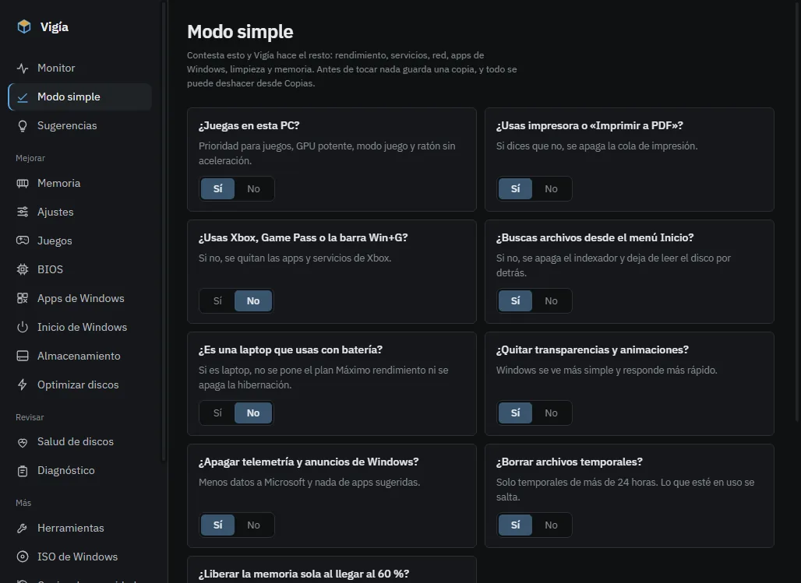
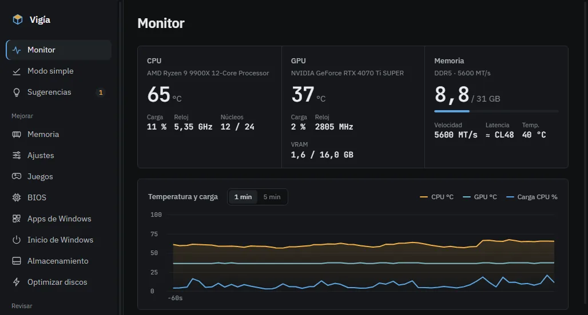

Optimización real. Rendimiento que se mide.
Vigía libera la RAM, apaga lo que arranca con Windows y ajusta el sistema para jugar. Antes de tocar algo guarda cómo estaba, y lo deshaces con un clic.
- Código a la vista, no se vende
- Sin cuenta ni anuncios
- No envía tus datos
Lo que toca en tu PC
Cada parte explica qué cambia en palabras simples. Lo arriesgado viene apagado y marcado.
Modo simple
Contestas unas preguntas (¿juegas?, ¿usas impresora?, ¿Xbox?) y Vigía hace el resto.
Memoria
Libera la RAM sola al llegar al 60 %. En una prueba devolvió 11,2 GB.
52 % → 16 %Inicio de Windows
Apaga de un clic todo lo que arranca con Windows.
Juegos
Ajustes de Windows para jugar y perfil para Fortnite. Solo edita archivos de configuración; nunca toca el antitrampas.
Monitor
Temperatura, carga y reloj con los mismos contadores del Administrador de tareas, y qué programa gasta de más.
ISO de Windows
Crea una ISO limpia a partir de la oficial: cuenta local, sin anuncios, sin TPM ni BitLocker automático. Y la pasa a un USB.
BIOS
Lee tu placa y te dice qué activar, como EXPO o Resizable BAR. Nunca escribe en la BIOS.
Apps y almacenamiento
Quita las apps de Windows que sobran y limpia temporales viejos. Lo que está en uso no se toca.
Capturas de Vigía


Cada cambio deja su copia
- Guarda cómo estabaRegistro, servicios, inicio de Windows o resolución. Si no puede guardar la copia, no cambia nada.
- Cambia solo lo que marcasteLos ajustes de riesgo medio o alto se prueban antes en una máquina virtual con Windows limpio.
- Lo deshaces con un clicDesde Copias o desde el icono junto al reloj. «Volver a como estaba» lo devuelve todo.
Minimizada, casi no existe
Una app para optimizar no debería ser lo que te quita rendimiento. Minimizada deja de leer sensores y de dibujar, y devuelve su memoria a Windows.
| CPU (un núcleo) | RAM | |
|---|---|---|
| Abierta | 6,7 % | 440 MB |
| Minimizada | 0,1 % | 49 MB |
El código está a la vista
Vigía cambia cosas de tu sistema, así que tienes derecho a ver cómo lo hace. Todo el código está en GitHub: puedes leerlo, compilarlo tú mismo o proponer cambios. Úsala y modifícala gratis; lo que no se permite es venderla ni cobrar por ella.
- No envía nada: sin telemetría. Solo pregunta a GitHub si hay versión nueva, y eso se puede apagar.
- Las actualizaciones vienen firmadas y la app comprueba la firma antes de instalarlas.
- No usa drivers de terceros, no apaga Defender ni UAC, y no trae activadores.
:: compilar Vigía tú mismo (SDK de .NET 10)
git clone https://github.com/JcperezDev/vigia
cd vigia/app/Vigia
dotnet build -c Release